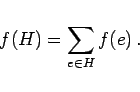

Inhalt Index DeskTop Bronstein

 Algebra und Diskrete Mathematik Algorithmen der Graphentheorie Bäume und Gerüste Gerüste
Algebra und Diskrete Mathematik Algorithmen der Graphentheorie Bäume und Gerüste Gerüste


Es sei G=(V,E,f) ein zusammenhängender bewerteter Graph. Ein Gerüst H von G heißt Minimalgerüst, wenn seine Gesamtlänge f(H) minimal ist:
|  | (5.348) |
Minimalgerüste sucht man z.B. dann, wenn die Kantenbewertungen Kosten repräsentieren und man an minimalen Gesamtkosten interessiert ist. Ein Verfahren zur Ermittlung von Minimalgerüsten ist der KRUSKAL-Algorithmus:
Die Auswahl der in Schritt b) zulässigen Kanten kann durch den folgenden Markierungsalgorithmus erleichtert werden: